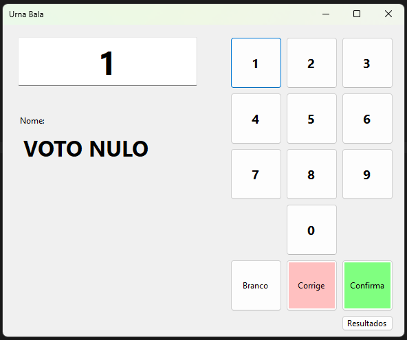

Aula 10
Herança
Objetivo: reutilizar dados comuns de uma pessoa nas classes Aluno e Professor.
1. Objetivo e resultado esperado
Você criará uma classe base chamada Pessoa e duas classes derivadas: Aluno e Professor.
As três classes terão objetos com nome. Cada classe derivada também terá uma informação própria.
O exemplo demonstra somente a herança. Ele não usa arrays (vetores), listas, validações ou banco de dados.
2. Conceitos essenciais
- Classe base: classe que reúne membros comuns para outras classes.
- Classe derivada: classe que herda membros acessíveis de uma classe base.
- Herança: recurso indicado por : depois do nome da classe derivada.
- base(...): chamada que envia valores ao construtor da classe base.
- Membro: qualquer item declarado dentro de uma classe, como propriedade, método ou construtor.
- Propriedade somente leitura: propriedade com apenas get. Seu valor é definido uma única vez, no construtor, e depois só pode ser lido.
3. Diagrama do exemplo
O diagrama é de implementação. Ele representa diretamente as classes C#, incluindo visibilidades, tipos, construtores, propriedades somente para leitura e método estático.
Como ler: + representa public e - representa private. As propriedades do diagrama possuem somente get; essa restrição está descrita nas notas.
4. Organização dos arquivos
Crie um arquivo para cada classe: Pessoa.cs, Aluno.cs e Professor.cs. Use Program.cs para executar o exemplo.
5. Etapa 1: criar a classe base Pessoa
Objetivo: guardar o nome e disponibilizar uma operação comum.
Arquivo: Pessoa.cs
using System;
public class Pessoa
{
public string Nome { get; }
public Pessoa(string nome)
{
Nome = nome;
}
public void Apresentar()
{
Console.WriteLine("Nome: " + Nome);
}
}- Crie a propriedade pública Nome.
- Crie o construtor Pessoa com o parâmetro nome.
- Atribua o parâmetro à propriedade.
- Crie o método Apresentar para mostrar o nome.
Verificação: um objeto Pessoa recebe um nome ao ser criado e pode executar Apresentar.
6. Etapa 2: criar a classe Aluno
Objetivo: criar uma pessoa que também possui um curso.
Arquivo: Aluno.cs
public class Aluno : Pessoa
{
public string Curso { get; }
public Aluno(string nome, string curso)
: base(nome)
{
Curso = curso;
}
}- Escreva : Pessoa depois de Aluno.
- Crie a propriedade Curso.
- Use : base(nome) para enviar o nome ao construtor de Pessoa.
- Atribua o curso à propriedade da própria classe.
Por que o construtor de Aluno recebe nome e curso? O construtor de Pessoa exige um nome. Por isso, Aluno recebe o nome e o repassa para Pessoa por meio de base(nome). O curso é guardado na própria classe Aluno.
Verificação: um objeto Aluno possui Nome, herdado de Pessoa, e Curso, declarado em Aluno.
7. Etapa 3: criar a classe Professor
Objetivo: criar uma pessoa que também possui uma disciplina.
Arquivo: Professor.cs
public class Professor : Pessoa
{
public string Disciplina { get; }
public Professor(string nome, string disciplina)
: base(nome)
{
Disciplina = disciplina;
}
}- Escreva : Pessoa depois de Professor.
- Crie a propriedade Disciplina.
- Use : base(nome) para inicializar o nome herdado.
- Atribua a disciplina à propriedade da classe.
Verificação: um objeto Professor pode acessar Nome e executar Apresentar, porque esses membros pertencem à classe base.
8. Etapa 4: usar as classes no programa
Objetivo: criar um aluno e um professor para observar os membros herdados e os membros próprios.
Arquivo: Program.cs
using System;
class Program
{
private static void Main()
{
Aluno aluno = new Aluno("Lia", "Informática");
Professor professor = new Professor("Marcos", "Programação");
aluno.Apresentar();
Console.WriteLine("Curso: " + aluno.Curso);
professor.Apresentar();
Console.WriteLine("Disciplina: " + professor.Disciplina);
}
}Resultado esperado:
Nome: Lia
Curso: Informática
Nome: Marcos
Disciplina: ProgramaçãoOrdem de execução em new Aluno("Lia", "Informática"):
- O construtor de Aluno é chamado com "Lia" e "Informática".
- base(nome) executa o construtor de Pessoa, que grava "Lia" em Nome.
- O corpo do construtor de Aluno executa e grava "Informática" em Curso.
Observação: o método Apresentar foi escrito uma vez em Pessoa. As duas classes derivadas podem usá-lo.
9. Conferir cada comportamento
- Aluno : Pessoa: indica que Aluno herda de Pessoa.
- Professor : Pessoa: indica que Professor herda de Pessoa.
- base(nome): chama o construtor da classe base para inicializar Nome.
- aluno.Nome: é permitido porque a propriedade foi herdada.
- professor.Apresentar(): é permitido porque o método foi herdado.
- aluno.Disciplina: não é permitido, pois essa propriedade existe somente em Professor.
10. Erros comuns
- Esquecer : Pessoa: sem essa parte, a classe não herda os membros de Pessoa.
- Esquecer base(nome): a classe base não recebe o valor exigido pelo seu construtor.
- Declarar Nome novamente: não repita a propriedade nas classes derivadas. Ela já existe em Pessoa.
- Tentar usar um membro de outra classe derivada: Aluno e Professor compartilham apenas o que vem de Pessoa.
11. Atividade de conferência
- Crie uma nova instância de Aluno com outro nome e outro curso.
- Chame Apresentar para essa instância.
- Crie uma classe Funcionario que herde de Pessoa e tenha a propriedade Setor.
- Crie um objeto Funcionario em Program.cs, chame Apresentar e mostre o setor.
11.1. Critérios de conclusão
- A classe Pessoa contém a propriedade Nome e o método Apresentar.
- Aluno e Professor herdam de Pessoa.
- Os construtores das classes derivadas chamam base(nome).
- O programa usa os membros herdados e as propriedades próprias de cada objeto.
12. Exercício de prática: urna eletrônica
Objetivo: criar uma classe Urna que cadastre candidatos em arrays (vetores), registre votos e informe os resultados solicitados. Este exercício não exige herança.
O que muda em relação ao exemplo anterior: aqui você não cria classes derivadas. Você cria uma única classe com vários dados privados e métodos públicos. O objetivo é praticar arrays (vetores), encapsulamento e regras de negócio.
Regra de organização: crie Urna.cs para a classe Urna. A classe Urna guarda todos os dados e aplica todas as regras. O código que cria a urna, faz cadastros, registra votos e mostra os retornos fica no projeto de teste.
Onde testar: a classe Urna pode ser testada em dois tipos de projeto. Escolha um deles:
- Console App (aplicativo de console): o código de teste fica em Program.cs, no método Main. Os retornos são mostrados com Console.WriteLine.
- Windows Forms App (aplicativo de formulários): o código de teste fica nos eventos dos controles do formulário, como o evento Click de um botão. Os retornos são mostrados em controles como Label, TextBox, ListBox ou MessageBox.
Em ambos os casos, o arquivo Urna.cs é exatamente o mesmo. A classe Urna não deve conter Console nem controles de formulário.

-1; Corrige apaga a seleção atual; Confirma chama Votar para registrar o voto; Resultados mostra os retornos de GetVotos.12.1. Diagrama detalhado da classe
Este é um diagrama de implementação. Os nomes, tipos, visibilidades, parâmetros e retornos devem ser mantidos como estão no diagrama.
Leitura técnica: o símbolo - indica campo private; o símbolo + indica construtor ou método public.
Notação: números de candidatos aparecem em formato de código, como 10, para não serem confundidos com outros números do texto.
Relação entre os campos: os três arrays (vetores) são paralelos; o índice i representa o mesmo candidato nos três arrays (vetores). O valor -1 representa voto em branco. Um número não cadastrado representa voto nulo. indexCandidato aponta para a próxima posição livre e informa a quantidade cadastrada.
12.2. Dados privados obrigatórios
- candidatoNome: array (vetor) de textos com o nome de cada candidato. Serve para descobrir o nome do candidato a partir da posição dele. Exemplo: se Ana foi o primeiro cadastro,
candidatoNome[0]guarda "Ana". - candidatoNumero: array (vetor) de números dos candidatos. Serve para comparar o número digitado na votação com os números cadastrados. Exemplo: se Ana tem o número
10, entãocandidatoNumero[0]guarda10. - candidatoVotos: array (vetor) com a quantidade de votos de cada candidato. Serve para contar os votos recebidos por cada um. Exemplo: se Ana recebeu 2 votos,
candidatoVotos[0]guarda 2. - contaVotosNulos: total de votos em números que não pertencem a candidatos cadastrados. Serve para informar quantos votos foram anulados. Aumenta em 1 sempre que alguém vota em um número inexistente, como
99. - contaVotosBrancos: total de votos com o número
-1. Serve para informar quantos eleitores não escolheram nenhum candidato. Aumenta em 1 a cada voto-1. - contaVotosValidos: total de votos destinados a candidatos cadastrados. Serve para informar quantos votos foram para candidatos reais. Aumenta em 1 a cada voto em um número cadastrado.
- indexCandidato: quantidade atual de candidatos cadastrados e índice da próxima posição livre. Serve para saber onde gravar o próximo candidato e até onde percorrer os arrays (vetores) nas buscas. Começa em 0 e aumenta em 1 a cada cadastro. Exemplo: com 2 candidatos cadastrados, vale 2 e a próxima posição livre é a 2.
Regra dos arrays (vetores): os três arrays (vetores) são paralelos. Por exemplo, os valores da posição 0 nos três arrays (vetores) descrevem o mesmo candidato.
12.3. Passo a passo de implementação
- Construtor Urna: Este construtor prepara uma urna nova e vazia, com espaço reservado para uma quantidade máxima de candidatos. Por exemplo, se a urna for criada com max_candidato igual a 5, ela poderá guardar até 5 candidatos. Para fazer isso, receba max_candidato e crie os três arrays (vetores) (candidatoNome, candidatoNumero e candidatoVotos) com esse tamanho. Depois, inicie contaVotosNulos, contaVotosBrancos, contaVotosValidos e indexCandidato com o valor zero.
- CadastroCandidato: Este método adiciona um novo candidato na urna, guardando o nome e o número dele. Por exemplo, ao cadastrar "Ana" com o número
10em uma urna vazia, Ana fica na posição 0 dos arrays (vetores). O próximo candidato ficará na posição 1, e assim por diante. Para fazer isso, receba nome e numero e verifique se indexCandidato é menor que o tamanho do array (vetor). Se for, grave o nome em candidatoNome e o número em candidatoNumero, ambos na posição indexCandidato. Mantenha em zero os votos dessa posição em candidatoVotos e aumente indexCandidato em 1. Se a urna estiver cheia, não faça nada: não altere nenhum array (vetor) nem contador. - GetNumCandidatos: Este método retorna um vetor de inteiros, contendo os números de todos os candidatos cadastrados na urna. Por exemplo, se foram cadastrados apenas 3 candidatos no objeto, então esse método deverá justamente retornar o número desses três candidatos. Para fazer isso, crie um novo array (vetor) de inteiros com tamanho igual a indexCandidato. Copie para ele somente os números das posições cadastradas. Retorne esse novo array (vetor); não retorne o array (vetor) privado.
- GetCandidato: Este método informa o nome do candidato que corresponde a um número digitado. Por exemplo, se Ana tem o número
10, entãoGetCandidato(10)retorna "Ana". Se o número for-1, significa voto em branco; se o número não existir, significa voto nulo. Para fazer isso, verifique primeiro se o número recebido é-1; se for, retorne exatamente VOTO EM BRANCO. Para outro número, percorra apenas as posições menores que indexCandidato, comparando com candidatoNumero. Se encontrar o número, retorne o nome da mesma posição em candidatoNome. Se terminar a busca sem encontrar, retorne exatamente VOTO NULO. - GetVotos: Este método informa quantos votos um número recebeu até o momento. Por exemplo, se o candidato
10recebeu 2 votos, entãoGetVotos(10)retorna 2. O número-1retorna a quantidade de votos em branco, e um número não cadastrado retorna a quantidade de votos nulos. Para fazer isso, verifique se o número recebido é-1; se for, retorne contaVotosBrancos. Para outro número, percorra as posições menores que indexCandidato. Se encontrar o número, retorne o valor da mesma posição em candidatoVotos. Se não encontrar, retorne contaVotosNulos. - Votar: Este método registra um voto na urna, somando 1 ao contador correto. Por exemplo, votar em
10soma 1 aos votos da Ana; votar em-1soma 1 aos votos em branco; votar em99, que não existe, soma 1 aos votos nulos. Para fazer isso, verifique se o número recebido é-1; se for, aumente somente contaVotosBrancos. Para outro número, percorra as posições menores que indexCandidato procurando esse número. Ao encontrar, aumente em 1 o voto da posição correspondente em candidatoVotos e aumente também contaVotosValidos. Se nenhum candidato for encontrado, aumente somente contaVotosNulos.
12.3.1. Exemplo visual: estado dos arrays (vetores)
Após criar uma urna com capacidade para 3, cadastrar Ana com 10 e Bia com 20, os arrays (vetores) ficam assim:
| Posição | candidatoNome | candidatoNumero | candidatoVotos |
|---|---|---|---|
| 0 | Ana | 10 | 0 |
| 1 | Bia | 20 | 0 |
| 2 | (vazia) | 0 | 0 |
indexCandidato vale 2. A posição 2 está livre e não deve ser lida nas buscas, porque só as posições menores que indexCandidato contêm candidatos. Se alguém votar em 10, o valor da posição 0 de candidatoVotos passa a ser 1.
12.4. Cenário obrigatório de conferência
Construa a interface da urna conforme a imagem e programe os eventos dos controles no Form1.cs. Ao iniciar o formulário, crie uma Urna com capacidade para 4 candidatos. Escolham quatro alunos da turma e cadastrem os nomes deles como candidatos. Cada candidato pode ter um número escolhido pela turma, desde que os números sejam diferentes entre si e não sejam 0 nem -1. O exemplo usa 0 para consultar o total de votos nulos e -1 para o voto branco. Façam o cadastro no evento Form1_Load e anotem os números escolhidos para usá-los na sequência de teste.
Atenção ao escopo: urna2026 precisa ser declarada como campo dentro da classe Form1, mas fora do construtor e dos métodos. No arquivo Form1.cs, localizem a linha public partial class Form1 : Form. Declarem o campo logo depois da chave de abertura da classe e antes do construtor Form1(), como neste exemplo:
public partial class Form1 : Form
{
private Urna urna2026;
public Form1()
{
InitializeComponent();
}
// Os eventos Form1_Load e Click também ficam dentro desta classe.
}Não declarem urna2026 como variável local dentro de Form1_Load. Uma variável local só existe dentro do método em que foi declarada; por isso, os eventos dos botões não conseguiriam acessá-la. O campo declarado na classe pode ser usado por Form1_Load e pelos demais eventos. Atribuam a nova instância no evento Form1_Load, antes de usar os botões.
Substituam "Nome do aluno 1" até "Nome do aluno 4" pelos nomes escolhidos e troquem 11, 22, 33 e 44 pelos números diferentes que cadastraram.
Função dos controles
- Cadastro ao iniciar — evento Form1_Load: substitua os nomes e números de exemplo pelos quatro nomes e números escolhidos pela turma.
private void Form1_Load(object sender, EventArgs e) { urna2026 = new Urna(4); urna2026.CadastroCandidato("Nome do aluno 1", 11); urna2026.CadastroCandidato("Nome do aluno 2", 22); urna2026.CadastroCandidato("Nome do aluno 3", 33); urna2026.CadastroCandidato("Nome do aluno 4", 44); label2.Text = ""; } - Botões de 0 a 9: programe diretamente o evento Click de cada botão. Veja o exemplo do botão
1:private void button1_Click(object sender, EventArgs e) { if (textBox1.Text == "BRANCO") textBox1.Text = "1"; else textBox1.Text += "1"; }Repitam esse código para os outros nove botões. Em cada cópia, ajustem o nome do evento Click para o botão correspondente e substituam as duas ocorrências do texto
"1"pelo algarismo desse botão. Por exemplo, no botão2, usembutton2_Clicke substituam"1"por"2". No formulário deste exemplo, o evento do botão0se chamabutton10_Click; nele, substituam"1"por"0". Assim, cada botão acrescenta seu próprio algarismo ao campo, sem repetir os dez trechos completos nesta explicação. - Campo de número — evento TextChanged: deixe este evento atualizar o rótulo em todos os casos: se o texto for um número, mostre o retorno de GetCandidato; se for BRANCO, mostre GetCandidato(-1); se estiver vazio, limpe o rótulo. Assim, os eventos Branco, Corrige e Confirma não precisam alterar o rótulo diretamente.
private void textBox1_TextChanged(object sender, EventArgs e) { int numero; if (int.TryParse(textBox1.Text, out numero)) label2.Text = urna2026.GetCandidato(numero); else if (textBox1.Text == "BRANCO") label2.Text = urna2026.GetCandidato(-1); else label2.Text = ""; } - Branco: defina o texto do campo como BRANCO. O evento TextChanged mostrará o retorno de GetCandidato(-1) no rótulo Nome. Depois, use Confirma para registrar o voto.
private void button12_Click(object sender, EventArgs e) { textBox1.Text = "BRANCO"; } - Corrige: limpe o campo. O evento TextChanged também limpará o rótulo. Essa ação não desfaz votos já confirmados.
private void button11_Click(object sender, EventArgs e) { textBox1.Text = ""; } - Confirma: se o texto for um número, envie esse número para Votar. Caso contrário, envie
-1para registrar voto branco. Depois, limpe o campo; o evento TextChanged limpará o rótulo.private void button13_Click(object sender, EventArgs e) { int numeroVoto; if (int.TryParse(textBox1.Text, out numeroVoto)) urna2026.Votar(numeroVoto); else urna2026.Votar(-1); textBox1.Text = ""; } - Resultados: percorra os números cadastrados, consulte os nomes e votos, acrescente os totais de votos brancos e nulos e mostre tudo em uma janela.
private void button14_Click(object sender, EventArgs e) { string msg = ""; int[] numeros = urna2026.GetNumCandidatos(); for (int i = 0; i < numeros.Length; i++) { int numero = numeros[i]; msg += $"Nome: {urna2026.GetCandidato(numero)} n°{numero}\n"; msg += $"Votos: {urna2026.GetVotos(numero)}\n"; msg += "--\n"; } msg += $"Votos Brancos: {urna2026.GetVotos(-1)}\n"; msg += $"Votos Nulos: {urna2026.GetVotos(0)}\n"; MessageBox.Show(msg); }
Sequência obrigatória de teste
- Digite o número escolhido para o primeiro candidato. O exemplo usa
11; substituam esse valor pelo número que cadastraram. Confira se o rótulo mostra o nome correspondente e pressione Confirma para registrar o voto. - Digite um número que não foi cadastrado. O exemplo usa
12; use esse valor somente se nenhum candidato tiver esse número. Confira se o rótulo mostra VOTO NULO. Pressione Corrige e confira se o campo e o rótulo foram limpos, sem registrar esse voto. - Digite novamente o número do primeiro candidato e confirme para registrar o segundo voto.
- Digite o número escolhido para o segundo candidato. O exemplo usa
22; substituam esse valor pelo número cadastrado. Confira se o rótulo mostra o nome correspondente e confirme uma vez. - Pressione Branco e depois Confirma para registrar um voto branco.
- Digite um número que não foi atribuído a nenhum candidato. O exemplo usa
99; se a turma tiver escolhido esse número, use outro número não cadastrado. Confira se o rótulo mostra VOTO NULO e pressione Confirma para registrar um voto nulo. - Pressione Resultados. Confira se o primeiro candidato recebeu 2 votos, o segundo recebeu 1 voto e os outros dois receberam 0 votos. Confira também 1 voto branco e 1 voto nulo. A lista deve exibir os quatro nomes e os números escolhidos pela turma.
12.5. Critérios de conclusão
- Todos os campos indicados no diagrama são privados e possuem os tipos mostrados.
- Os métodos públicos possuem os nomes, parâmetros e retornos mostrados no diagrama.
- Os arrays (vetores) não são acessados nem retornados diretamente pelo programa de teste (console ou formulário).
- O cadastro não ultrapassa a capacidade definida no construtor.
- Voto branco, voto válido e voto nulo atualizam somente os contadores ou posições previstos para cada caso.
- A classe Urna não contém código de console nem de formulário.
- O cenário obrigatório produz todos os retornos esperados, em Console App ou Windows Forms App.
13. Resumo
- Pessoa concentra o dado e o comportamento comuns.
- Aluno reutiliza Nome e acrescenta Curso.
- Professor reutiliza Nome e acrescenta Disciplina.
- A herança evita repetir em cada classe os membros que possuem o mesmo significado.
Última atualização: 07/10/2026